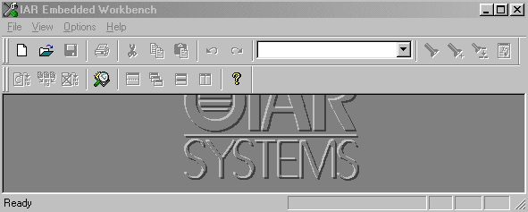
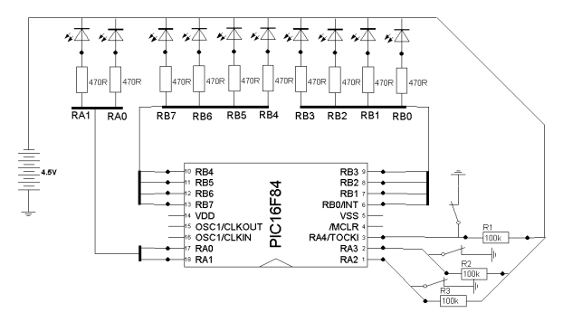
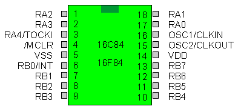

<!--#include virtual="../template1"-->Программирование в среде IAR<!--#include virtual="../template2"-->
<!--#include virtual="./menu"-->
<!--#include virtual="../template3"-->

<h1 align=center>Программирование микроконтроллеров на Си. 
Программирование в среде IAR Embedded Workbench for Microchip PICmicro 16/17.</h1>

<b>Автор:</b> <a href="http://forum.sources.ru/index.php?showuser=6238" target="_blank"><i>bizar</i></a>

<h4>Немного о IAR</h4>
<p>Как и во всех статьях по программированию начинают с самого лёгкого, например простой программой "Hello world" так и в моей  первой статьи я начну с простого, работа со светодиодами. Но для начала я вас дорогие читатели посвищу в среду IAR. IAR - это компилятор для микропроцессора с Гарвардской архитектурой (два адресных пространства - для кода и данных) и для более эффективной работы в ограниченных условиях микроконтроллеров. Также следует отметить возможность описывать внешние события и управлять средой и симулятором с помощью специального скриптового языка. Также очень хорошо реализована отладка Си-приложений - то есть удобно просматривать структуры данных, как глобальные, так и локальные, и управлять симулятором на основе структуры Си-кода. Скачать IAR можнос сайта производителя <a href="http://www.iar.com">www.iar.com</a></p>

<h4>Установка и настройка IAR для Pic</h4>
<p>Скачиваем пакет IAR Embedded Workbench for Microchip PICmicro 16/17 и устанавливаем его. Открываем IAR Embedded Workbench смотрите ниже внешний вид программы.</p>
<div align=center></div>
<p>Нажимаем меню File->New..., выбираем source/text, вставляем исходник, нажимаем File->SaveAs..., вводим имя в виде имя_файла.c , нажимаем Сохранить. Если в проекте в разделе Common Sources этот файл не появился, то нажимаем меню Project->Files..., выбираем этот файл, нажимаем Add, затем Done. Файл в проекте. Дальше - компиляция. В Project->Options в General нужно указать путь к "Процессор сетап файл" pic16f84. (ну или тот микроконтроллер с которым вы работаете.) IAR должно выдать что-то типа:</p>
<pre class=code>
Rebuilding target Debug...
tit.c
Linking...</pre>

<h4>Первые программы</h4>
<p>Для начало составим схему с 10 светодиодами:</p>
<div align=center></div>

А вот сам исходник программы:

<pre class=code>#include <io16f84.h>
/* подпрограмма временной задержки */
void tick(void)
  {
  unsigned int p;
  for ( p = 0xffff; p!=0; p--);
  for ( p = 0xffff; p!=0; p--);
  for ( p = 0xffff; p!=0; p--);
  for ( p = 0xffff; p!=0; p--);
  }

void TransmitBitDelay(void)
  {
  for (int i= 10; i!=0; i--)
  for (int j= 10; j!=0; j--);
  }

void TransmitByte(char Symbol)
  {
  PORTA &= 0xfe; //передаем стартовый бит
  count = 8;// счетчик передаваемых бит данных
  do
     {
      TransmitBitDelay(); // задержка перед передачей следующего бита
      PORTA ^= (~Symbol) & 1; // выдаем очередной бит в COM
      Symbol >>= 1; //следующий бит
      count--;
     }
   while (count >0);
   TransmitBitDelay(); // задержка перед передачей следующего бита
   PORTA |= 1; //передаем стоповый бит 
  } 

main ()
  {
  TRISB = 4|8;  /* RB2 - RB3 настраиваем на вход */
  PORTB = 0xfc; /* RB0 - RB1 настраиваем на вывод*/
  while(1) 
    {
     do 
       {
       /* НЕБОЛЬШОЙ ПРОМЕЖУТОК ВРЕМЕНИ, "не будем опрашивать кнопки слишком часто" */
       tick();
       Keys = (~PORTB) & (4|8); /* состояние кнопок на RB2-RB3. Ждёт нажатия */
       } 
    Keys >>= 1;
    while(PORTB & Bit(0)); /* если установлен бит 0, значит нажата кнопка на RB2 */
    while(1)
      {
      void TransmitByte(34) /* посылаем 34 */
      }
 
      while(PORTB & Bit(1)); /* если установлен бит 1, значит нажата кнопка на RB3 */
      while(1)
        {
        void TransmitByte(35) /* посылаем 35 */
        }
     }
  }</pre>
<p>Далее для разнообразия подкину исходник Бегущего огня, то есть светодиоды будут загораться по очереди. Все вопросы которые у вас возникнут задавать на форуме сайта где размещена статья или почитайте в ссылке которая указана ниже, там сто пудов найдёте ответ на свой вопрос.</p>
<p><b>Бегущий огонь:</b></p>
<pre class=code>#include <io16f84.h>
/* подпрограмма временной задержки */
void tick(void) {
   unsigned int i;
   for ( i = 0xffff; i!=0; i--);
   for ( i = 0xffff; i!=0; i--);
   for ( i = 0xffff; i!=0; i--);
   for ( i = 0xffff; i!=0; i--);
}
/* Эта подпрограмма зажигает нулем светодиод на определенном выводе */
void FlashPin(unsigned char pin_code){
   switch(pin_code) {
      case 0:
      case 1:
      case 2:
      case 3:
      case 4:
      case 5:
      case 6:
      case 7:
         /* 0-7 - выводы порта B */
         PORTB &= 0xfe<<pin_code;
         break;
      case 8:
      case 9:
         /* 8,9 - выводы порта A(RA0,RA1) */
         PORTA &= 0xfe<<(pin_code-8);
   }
}
/* Эта подпрограмма гасит все светодиоды */
void TurnOffPins(void) {
   PORTB = 0xff;
   PORTA |= 3;
}
/* основная программа */
main() {
   volatile unsigned char Keys;
   unsigned char counter;
   unsigned char i;
   unsigned char direction;
   TRISA = 4 | 8 | 16; // RA2,RA3,RA4 настраиваем на вход
   PORTA = 0x1c;
   TRISB = 0;
   while(1) {
      TurnOffPins();   /* гасим все светодиоды */
      do {
         tick(); // не будем опрашивать кнопки слишком часто
         Keys = (~PORTA) & (4|8|16); // состояние кнопок на RA2-RA4. 1-нажата
      } while(Keys == 0);
      Keys >>= 2; // нормализуем(сдвигаем). Теперь:
                  //  бит 0 - RA2,
                  //  бит 1 - RA3,
                  //  бит 2 - RA4.
      counter = Keys;
      direction = -1;   /* направление "движения" */
      for( i=1000 ; i != 0 ; i-- ) {
         if( counter == Keys ) {
            // прошли круг - начанаем двигаться в другую сторону
            direction = -direction;
         }
         TurnOffPins();        /* гасим все светодиоды */
         FlashPin(counter);    /* зажигаем определенный */
         counter += direction; /* в следующий раз будем зажигать другой */
         if( counter == 0xff ) {
            /* закольцовываем "снизу" */
            counter = 9;
         }
         if( counter == 10 ) {
            /* закольцовываем "сверху" */
            counter = 0;
         }
         tick();  /* пауза - чтобы светодиод погорел немного */
      }
   } 
}</pre>
<p>А вот и сама ссылка где родилась эта идея: <a href="http://forum.sources.ru/index.php?showtopic=42431">http://forum.sources.ru/index.php?showtopic=42431&st=0</a>. Теперь я вам растолкую как указывать на вход или выход (выбирать нужную ногу) чтобы было понятней вот строчка исходника:</p>
<pre class=code>PORTA &= 0xfe</pre>
<p>Что за 0xfe? Это и есть адрес нужной ноги микроконтроллера. Объясню вам на примере микроконтроллера pic16f84</p>
<div align=center></div>
<p>RB, RA это и есть обозначение портов для настройки ввода/вывода. В исходнике они обозначаются PORTA (это обозначение всех портов RA), PORTB (это обозначение портов RB). Далее идёт номер порта 0xfe это номер порта RB0. Переводим у 0xfe, fe из шестнадцатеричной в двоичную систему исчисления это будет 11111110 считаем число всех цифр это будет восьмизначное число и у нашего микроконтроллера восемь портов ввода/вывода RB0-RB7 значит это число (fe) относиться к порту RB так как у RA всего пять портов RA0-RA4. Теперь смотрим нолик у числа 11111110 находиться в начале числа вот это и говорит что это первый порт на RB, не трудно догадаться что это RB0. Если бы нолик стоял вторым числом 11111101 то это был бы порт RB1 и т. д. Также у портов RA.</p>
<p><b>Для портов RA:</b></p>
<pre class=code>PORTA = 0x1f;//записываем во все разряды PORTB единицы (11111)
PORTA = 0x1е;// записываем в RB0 0, в остальные разряды 1 (11110)
PORTA = 0x1d;// записываем в RB1 0, в остальные разряды 1 (11101)
PORTA = 0xb;// записываем в RB2 0, в остальные разряды 1 (11011)
PORTA = 0x17;// записываем в RB3 0, в остальные разряды 1 (10111)
PORTA = 0xf;// записываем в RB4 0, в остальные разряды 1 (01111)</pre>
<p><b>Для портов RB:</b></p>
<pre class=code>PORTB = 0xff;//записываем во все разряды PORTB единицы (11111111)
PORTB = 0xfе;// записываем в RB0 0, в остальные разряды 1 (11111110)
PORTB = 0xfd;// записываем в RB1 0, в остальные разряды 1 (11111101)
PORTB = 0xfb;// записываем в RB2 0, в остальные разряды 1 (11111011)
PORTB = 0xf7;// записываем в RB3 0, в остальные разряды 1 (11110111)
PORTB = 0xef;// записываем в RB4 0, в остальные разряды 1 (11101111)
PORTB = 0xdf;// записываем в RB5 0, в остальные разряды 1 (11011111)
PORTB = 0xbf;// записываем в RB6 0, в остальные разряды 1 (10111111)
PORTB = 0x7f;// записываем в RB7 0, в остальные разряды 1 (01111111)</pre>
<p>В написании статьи огромное участие принимал: <a href="http://forum.sources.ru/index.php?showuser=3792" target="_blank">trainer</a> и <a href="http://forum.sources.ru/index.php?showuser=6318" target="_blank">potor</a>.</p>

<!--#include virtual="../template4"-->
